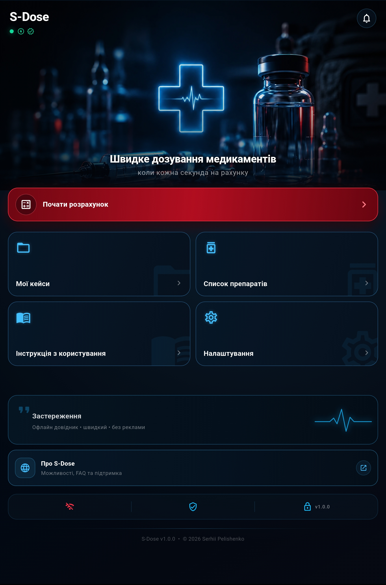
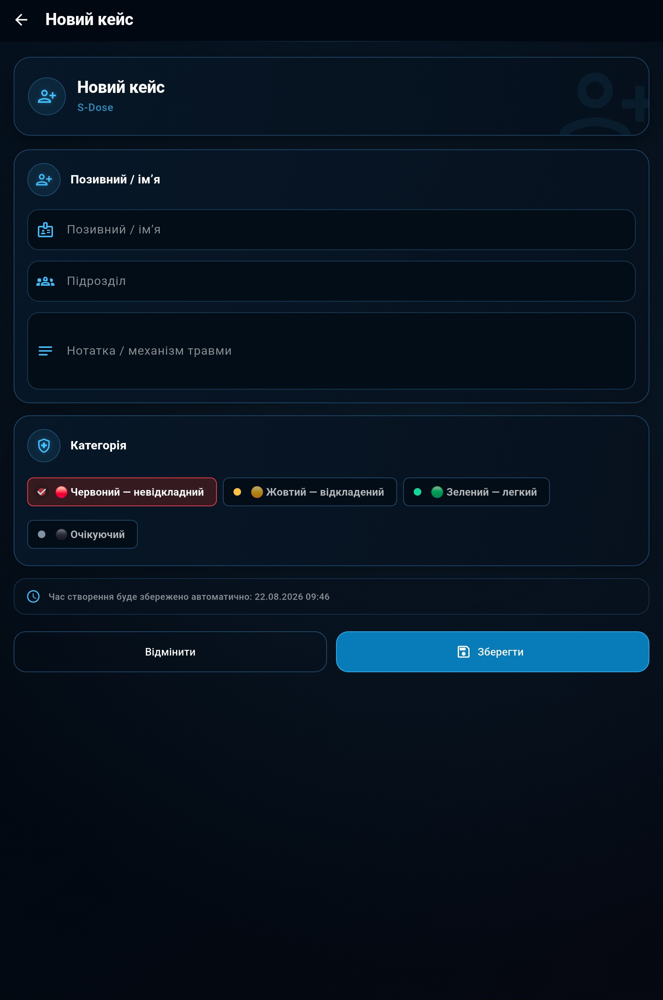
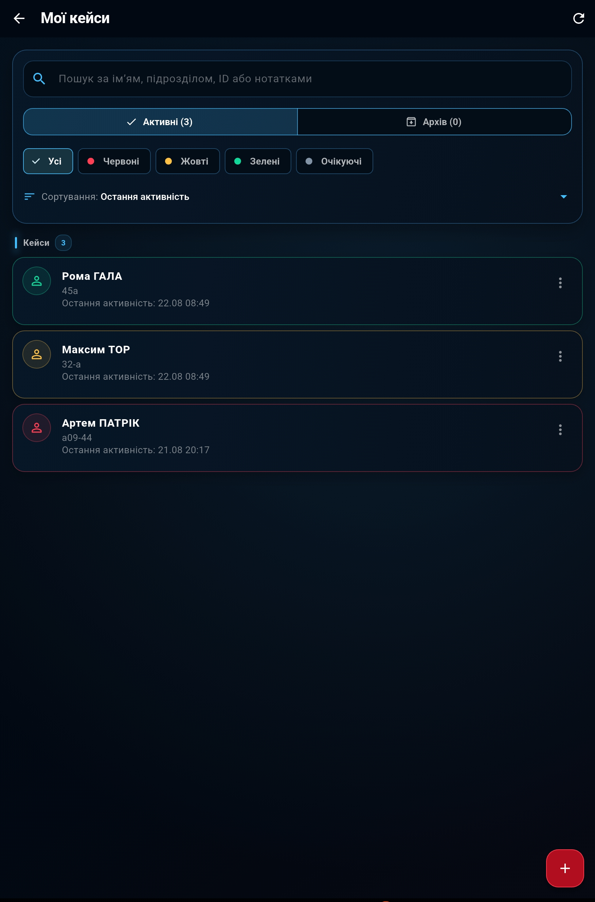
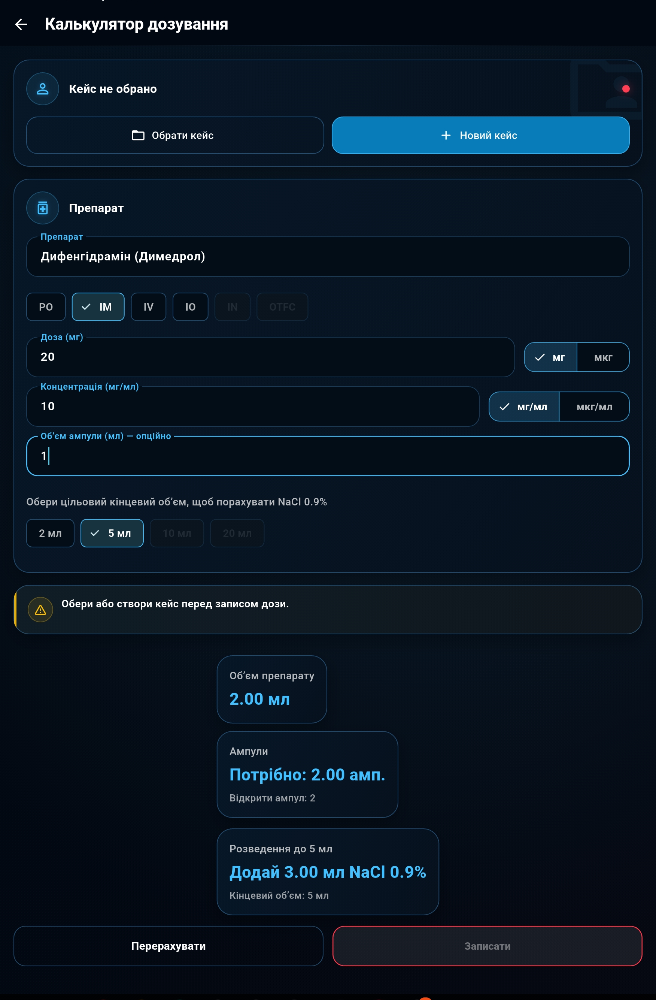
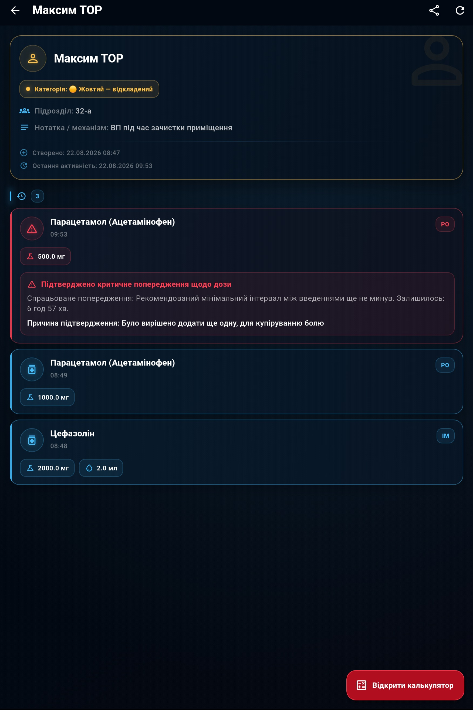
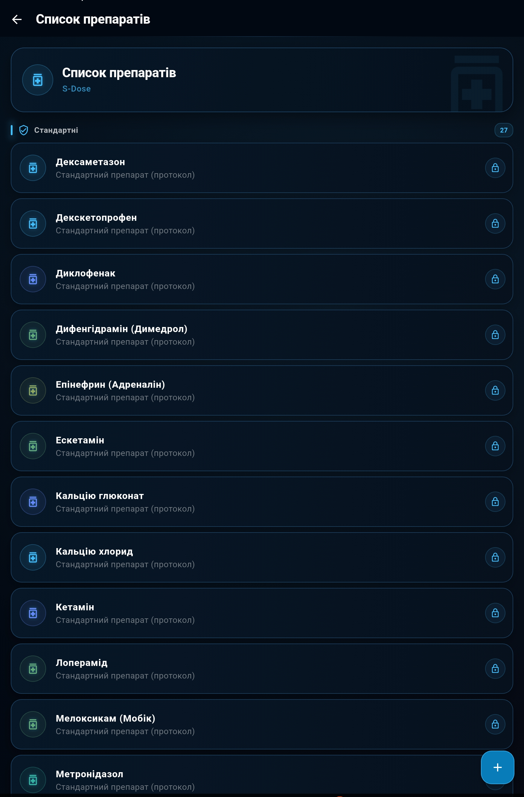
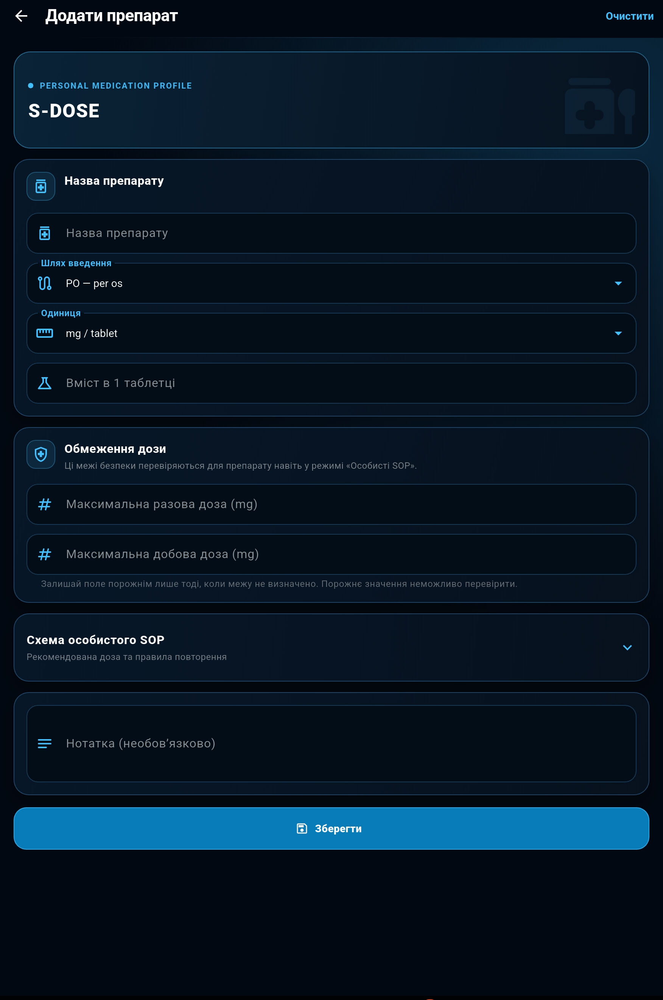
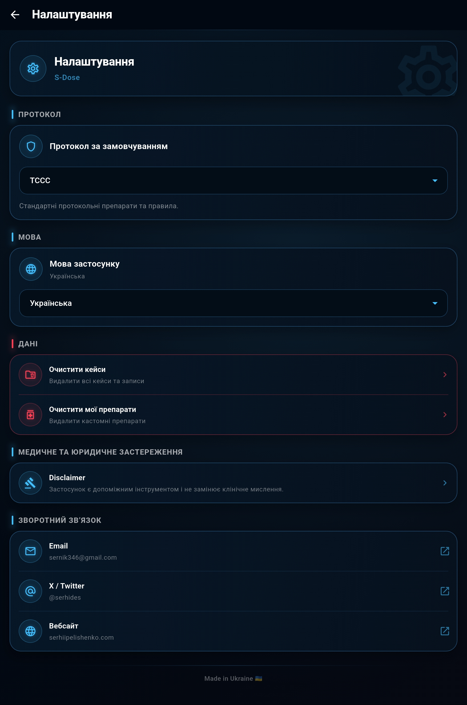

S-Dose
Офлайн-довідник, калькулятор і журнал доз лікарських засобів для швидкої роботи в екстрених та польових умовах.
Українська й англійська мови · локальне збереження даних · без реклами
Публічне встановлення поки недоступне. Напишіть мені щодо майбутнього доступу.
© 2026 Сергій Пелішенко. S-Dose. Усі права захищено.
Про застосунок
Розрахунок і фіксація доз без зайвих дій
S‑Dose об’єднує довідник препаратів, розрахунок доз, перевірку критичних обмежень і журнал введень у єдиний послідовний процес у межах одного кейсу.
S‑DOSE У РОБОТІ
Один кейс.
Один кейс.
Увесь процес.
Від вибору препарату й розрахунку дози до перевірки обмежень та фіксації введення.
Основні можливості
Інструменти для практичної роботи
Ключові функції S‑Dose зібрані навколо одного кейсу та працюють як єдиний послідовний процес.
Розрахунок доз
Розрахунок за масою тіла, концентрацією та шляхом введення.
Перевірка обмежень
Контроль разової, добової дози та мінімального інтервалу.
Мої кейси
Окрема історія призначень і введень для кожного кейсу.
Власні препарати
Можливість доповнювати локальний довідник під власний SOP.
Знайомство з інтерфейсом
Оберіть розділ, щоб побачити його основні елементи та призначення.
01 Основний екран

01
Почати розрахунок
Відкриває калькулятор дозування для створення кейсу, та розрахунку лікарських препаратів.
02
Мої кейси
Створення, вибір і перегляд кейсів та журналу введень.
03
Список препаратів
Довідник стандартних препаратів і користувача, маршрути введення, дозування та обмеження.
04
Налаштування
Вибір мови, протоколу та основних параметрів застосунку.
05
Застереження
Важлива інформація про безпечне використання та обмеження S‑Dose.
02 Створення кейсу

01
Позивний або ім’я
Вкажіть ім’я чи позивний, щоб швидко знайти потрібний кейс.
02
Підрозділ
Додайте підрозділ або іншу інформацію для ідентифікації пацієнта.
03
Примітки
Опишіть поранення, механізм травми, точну дату події або будь-які важливі деталі, які потрібно запам’ятати.
04
Категорія
Оберіть категорію кейсу: червоний, жовтий, зелений або очікуючий.
05
Автоматичний час створення
Дата й час створення кейсу зберігаються автоматично.
03 Перелік ваших кейсів

01
Окремі кейси
Дані кожного пацієнта зберігаються в окремому кейсі.
02
Пошук, фільтри та сортування
Кейси можна шукати, фільтрувати за категорією та впорядковувати.
03
Закріплення кейсів
Важливі кейси можна закріпити у верхній частині списку.
04
Редагування та видалення
Дані кейсу можна змінити, перемістити в архів або видалити.
05
Хронологія введень
Журнал показує препарат, дозу, шлях і час введення.
06
Контекст кейсу
Категорія, підрозділ і примітки залишаються доступними під час роботи.
04 Калькулятор дозування

01
Вибір кейсу
Оберіть наявний кейс або створіть новий. Кейс потрібен для збереження розрахунку в журналі введень.
02
Вибір препарату
Знайдіть і виберіть препарат із вбудованого довідника або власного списку.
03
Шлях введення
Оберіть доступний для препарату шлях введення: PO (внутрішньо), IM (в/м), IV (в/в), IO (в/к), IN (інтраназальний) або OTFC (транмукозний фентаніл).
04
Доза препарату
Вкажіть необхідну дозу, яку треба дати пацієнту, та виберіть одиницю вимірювання — міліграми або мікрограми.
05
Концентрація
Введіть концентрацію препарату (у таблетці, розчину) та відповідні одиниці вимірювання.
06
Ампула та розведення
Зазначте об’єм ампули (або грамовку таблетки) й виберіть кінцевий об’єм розчину для розведення (об'єм шприца який ви будете використовувати).
08
Результат розрахунку
S‑Dose визначить об’єм препарату, необхідну кількість ампул і об’єм розчинника.
07
Перевірка та збереження
Застосунок перевірить дозу, добовий ліміт і інтервал між введеннями, після чого результат можна зберегти в журналі кейсу.

09
Готові схеми застосування
Для деяких препаратів у S-Dose вже додані готові схеми застосування. Після вибору схеми калькулятор автоматично заповнює передбачену дозу, одиницю вимірювання, шлях введення та відповідну форму препарату.
- Mild–moderate pain
- Показання: легкий або помірний біль.
- CWMP
- Combat Wound Medication Pack — схема застосування з комплекту медикаментів для пораненого.
- 1000 mg / 1300 mg
- Разова доза препарату. Різні значення відповідають доступним варіантам схеми або лікарської форми.
- PO
- Per os — прийом препарату через рот.
- q8h
- Введення або прийом препарату кожні 8 годин.
Примітки
- Контекстні обмеження. S-Dose змінює доступні параметри залежно від обраного шляху введення. Наприклад, для внутрішньом’язового введення будуть доступні лише передбачені для нього варіанти шприців — 2 та 5 мл.
- Доступні шляхи введення. Для препаратів із вбудованого довідника заздалегідь визначені дозволені шляхи введення. Непередбачені для конкретного препарату варіанти будуть недоступними для вибору.
- Перевірка дозування та інтервалів. Перед збереженням S-Dose перевіряє разову дозу, сумарну кількість препарату за останні 24 години та час, що минув після попереднього введення. Якщо встановлені для препарату межі перевищено, застосунок покаже додаткове попередження. Важливо: попередження не блокує подальші дії. Якщо клінічна ситуація потребує введення дози поза встановленими обмеженнями, ви можете підтвердити рішення та зберегти запис. За бажанням до нього можна додати примітку із поясненням причини такого рішення.
- Перевірка введених даних. Результат залежить від зазначеної дози, концентрації та одиниць вимірювання. Якщо випадково ввести зайву цифру, калькулятор може показати непропорційно великий результат — це сигнал повторно перевірити всі поля. Застосунок не може розпізнати кожну помилку введення автоматично.
- Дата й час введення. Дата та час кожного запису визначаються автоматично за системними налаштуваннями телефона. S-Dose не встановлює і не коригує їх самостійно. Важливо: під час роботи в умовах GPS-спуфінгу телефон може помилково визначати місцезнаходження. Якщо на пристрої ввімкнене автоматичне визначення часового поясу за геолокацією, це може призвести до неправильного часу в журналі введень. Перед початком роботи перевірте системну дату, час і часовий пояс телефона.
- Допоміжний інструмент. S-Dose допомагає виконувати розрахунки та звертає увагу на потенційні помилки, але не замінює клінічне рішення, перевірку препарату та чинні медичні протоколи.
05 Ваші збережені кейси

01
Дані кейсу
У верхній частині відображаються ім’я або позивний, категорія, підрозділ, примітка, дата створення та остання активність.
02
Журнал введень
Усі збережені введення розташовуються в хронологічному порядку в межах вибраного кейсу.
03
Інформація про введення
Для кожного запису вказуються препарат, доза, шлях введення, розрахований об’єм і точний час.
04
Збережені попередження
Якщо препарат було записано після критичного попередження, це залишається помітним у журналі разом із зазначеною причиною.
Важливо: підтверджене попередження та додана користувачем причина зберігаються разом із записом. Це дозволяє бачити не лише введену дозу, а й контекст, у якому було прийняте рішення.
05
Продовження роботи
Кнопка «Відкрити калькулятор» дозволяє повернутися до розрахунку дозування для поточного кейсу.
06
Контекст кейсу
Категорія, підрозділ і примітки залишаються доступними під час роботи.
07
Передавання даних кейсу
Кнопка «Поділитися» у верхній частині екрана формує текстовий файл .txt з основними даними пацієнта та журналом введень. Його можна передати будь-яким доступним на телефоні способом: через месенджер, електронну пошту, Bluetooth або інший застосунок.
Важливо: експортований файл може містити персональні та медичні дані пацієнта. Перед надсиланням перевірте вміст файлу, правильність одержувача та безпечність обраного способу передавання.06 Довідник препаратів

01
Стандартні препарати
Вбудований список препаратів S-Dose. Для них уже задані доступні шляхи введення, схеми дозування та обмеження, що використовуються застосунком у режимі TCCC.
02
Захищення від змін
Стандартні препарати позначені значком замка. Їх не можна редагувати або видаляти, щоб випадково не змінити закладені в застосунок протокольні параметри.
03
Власні препарати
Кнопка «+» дозволяє створити власний препарат: указати назву, шлях введення, форму, концентрацію, дозування, обмеження та правила повторного введення.
04
Особисті / SOP
Створені користувачем препарати стають доступними в калькуляторі в режимі «Особисті / SOP». Це дозволяє адаптувати S-Dose до локального протоколу, SOP закладу або підрозділу.
Важливо: Власні препарати та їх параметри визначає користувач. Перед використанням перевіряйте їх відповідність актуальному локальному SOP або іншому чинному джерелу.07 Створення власного препарату

01
Основні параметри препарату
Вкажіть назву препарату, шлях введення та форму/одиницю. Залежно від вибраної форми S-Dose дозволяє задати концентрацію або вміст діючої речовини в таблетці, капсулі, впорскуванні чи іншій доступній формі.
02
Обмеження дози
Для власного препарату можна встановити максимальну разову та максимальну добову дозу. Ці значення використовуються системою перевірок S-Dose навіть у режимі «Особисті / SOP».
Важливо: Якщо межа для препарату не визначена, поле можна залишити порожнім — але таке значення застосунок не зможе автоматично перевіряти.
03
Власна схема SOP
За потреби можна вказати рекомендовану дозу відповідно до локального SOP. Якщо введена користувачем доза відрізнятиметься від заданої схеми, S-Dose зможе показати відповідне попередження.
04
Правила повторного введення
Для препарату можна визначити логіку повторення:
Для схем із часовим інтервалом можна додатково встановити найраніший дозволений повтор.
05
Контроль повторного введення
Можна визначити, як S-Dose реагуватиме на спробу занадто раннього повторного запису: показати звичайне попередження або вимагати критичного підтвердження.
Також доступні додаткові правила:
«Вимагати переоцінку перед повтором» — нагадує оцінити стан постраждалого та ефект попереднього введення.
«Потребує попереднього введення»— використовується для схем, які не можуть бути першим відповідним введенням у кейсі.
06
Важливо:
Параметри власних препаратів задає сам користувач. S-Dose не перевіряє їх правильність за зовнішнім клінічним джерелом.
Перед використанням власної схеми перевірте дозування, обмеження та правила повторення за актуальним SOP, протоколом або іншим авторитетним джерелом.
Нотатка
До препарату можна додати власну текстову примітку — наприклад, особливості локального SOP, підготовки препарату або інші важливі для користувача пояснення.
08 Налаштування

01
Протокол за замовчуванням
Визначає режим, який S-Dose використовуватиме для роботи з препаратами та правилами дозування.
TCCC — використовує вбудовані стандартні препарати та налаштовані для них протокольні правила.
Особисті / SOP — додатково дозволяє використовувати власні препарати та схеми, створені користувачем.
02
Мова застосунку
Дозволяє змінити мову інтерфейсу S-Dose між українською та англійською.
Якщо обрано системний режим, застосунок використовує мову пристрою серед підтримуваних мов.
03
Керування локальними даними
У цьому розділі можна окремо очистити:
Перед видаленням S-Dose показує підтвердження, оскільки ці дії неможливо скасувати.
04
Медичне та юридичне застереження
Відкриває повний Disclaimer S-Dose з інформацією про призначення застосунку, обмеження розрахунків, необхідність незалежної перевірки медичних даних та відповідальність користувача.
05
Зворотний зв’язок
Через цей розділ можна зв’язатися з розробником або перейти до офіційних ресурсів S-Dose:
Посилання відкриваються через відповідні застосунки або браузер пристрою.
06
Ліцензії
У розділі ліцензій можна переглянути інформацію про Flutter та сторонні програмні бібліотеки, які використовуються в S-Dose, разом із відповідними ліцензійними умовами.
Зберігання даних
Кейси, записи введення препаратів та власні препарати зберігаються локально на пристрої. Видалення відповідних даних у налаштуваннях очищає їх із локального сховища S-Dose.
Безпека та відповідальність
Інструмент підтримки, а не заміна клінічного рішення
S-Dose має довідковий та розрахунковий характер. Застосунок не замінює професійну медичну оцінку, офіційні протоколи, інструкції виробників лікарських засобів або клінічне мислення користувача.
FAQ
Поширені запитання
Короткі відповіді про роботу застосунку, зберігання даних і використання власних налаштувань.
Чи працює S‑Dose без інтернету?
Так. Довідник препаратів, калькулятор дозування, кейси та журнал введень працюють локально на пристрої.
Де зберігаються дані?
Робочі дані зберігаються локально на пристрої користувача та не передаються автору застосунку.
Чи можна додавати власні препарати?
Так. Користувач може створювати власні записи препаратів, визначати параметри дозування та пов’язувати їх зі своїм SOP.
Коли застосунок буде доступний?
S-Dose перебуває в розробці; дату публічного випуску ще не оголошено. Щоб запитати про майбутній доступ, напишіть мені.
Чи замінює S‑Dose клінічне рішення?
Ні. S‑Dose є допоміжним інструментом для розрахунку та документування. Остаточне рішення щодо застосування препарату завжди приймає кваліфікований користувач.
Чи можна передати інформацію про кейс?
Так. Інформацію про кейс можна сформувати у форматі TXT та передати будь-яким доступним на пристрої способом. Перед передаванням необхідно перевірити, що файл не містить персональних даних пацієнта.
Зворотний зв’язок
Допоможіть зробити S-Dose кращим
Повідомте про помилку, незрозумілий сценарій або запропонуйте функцію, якої вам бракує.
Не надсилайте персональні або медичні дані пацієнтів.
ПІДТРИМКА ПРОЄКТУ
Допоможіть S‑Dose розвиватися
S‑Dose є незалежним некомерційним проєктом і залишається безкоштовним незалежно від здійснення підтримки.
Якщо ви бажаєте надати фінансову підтримку його розвитку, зв’яжіться з автором для індивідуального обговорення.
Отримані кошти можуть бути використані на тестування, технічну інфраструктуру та підготовку оновлень S‑Dose.
Обговорити підтримку
Підтримка є добровільною і не відкриває додаткових функцій у застосунку.
Співпраця та контакти
Відкритий до співпраці
та нових ініціатив.
Якщо у вас є ідея, проєкт або потреба в медичному чи освітньому рішенні — давайте обговоримо, як ми можемо працювати разом.